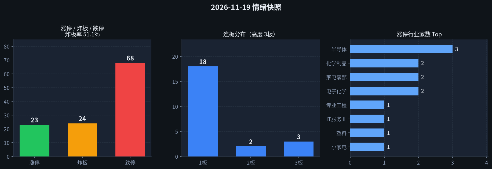

交易日 2026-11-19（周四） · 目标交易日 2026-11-20（周五） · 退潮加深·跌停再扩
情绪：退潮 涨停 23 · 跌停 68 炸板率 51.1% · 晋级率 12.5% · 高度 3板| 票 | 昨动作 | 今收盘涨跌幅 | 判定 |
|---|---|---|---|
| 全市场 | 空仓观望 | 跌停39→68扩散，炸板率37.5%→51.1%，晋级22.2%→12.5%，红盘约12% | 对 |
| 算力PCB | 只观察/不加 | 沪电低开−3.72%收+1.13%；深南+5.00%未封；景旺−2.00%、剑桥−3.78%、胜宏−0.69%；浪潮−8.25%、海光−4.81%；旭创+3.05%、新易盛+5.59%分化，未成主线 | 对 |
| 家电簇 | 不加/不抄九阳 | 九阳低开跌停后炸13、14:47回封+10.01%（额51.29亿）；小熊/爱仕达跌停，北鼎−8.59%、华帝−7.55%，长虹美菱仅+0.85%；海立回封+10%是个股 | 对（纪律） |
| 高度/反复 | 不加 | 华东重机一字开后炸3收+4.07%（换手51%）断4板；华胜高开+4.52%收−0.71%；天普复牌跌停；广百2连、国统3连跌；盛剑/全筑/真视通晋级3板但额仅0.61–2.44亿 | 对 |
| 跌停 | 不抄 | 昨39家跌停仅九阳1家脏反包，17家续跌；文投/横店/慈文等3连跌，日出东方4连跌 | 对 |
一句话：五条指令全对——空仓躲开跌停再扩和高度断板；九阳是低开跌停后的尾盘脏回封，不能反过来证明「抄跌停」可行。
改进（未回测）：退潮里即使出现低开跌停、尾盘大额回封，次日也不把这类脏反包升级为开仓；只要跌停仍在扩散、晋级仍弱，继续空仓。
加深——昨「修复苗头」今日全部证伪。
涨停 23（周三40↓明显下降），跌停东财池 68（周三39↑明显扩散；其中4连跌1家、3连跌8家、2连跌8家），晋级率 12.5%（5/40，较22.2%再降，且晋级全是小额3板或质量差的2板），炸板率 51.1%（24/47，周三37.5%↑明显飙升），红盘约 12.2%（乐咕：上涨638 / 下跌4532 / 平盘47，活跃度12.21%；东财涨跌分布接口失败，已注明）。指数分化（上证 −0.28%、创业板 −0.79%、科创50 +1.83%，中证1000 −1.88%），两市再缩约646亿至约13051亿。涨停池成交额约178亿（周三约368↓腰斩），跌停池约300亿（周三约231↑），跌停额重新压过涨停额。连板高度回落到 3板（盛剑/全筑/真视通，额仅0.61–2.44亿；华东重机断4板）。定性是 退潮加深：不是冰点（科创50仍在拉、还有零星反包），更不是修复或启动——周三那点「跌停收敛、涨停额反超」的苗头今天被直接证伪，亏钱效应重新占上风。默认继续空仓，不接力九阳脏反包，不追小额3板，不把中京电子孤立首板当新主线。
今日为退潮，且跌停明显扩散、炸板率明显飙升，触发情绪→路线2风险过滤句，见文末。
| 指标 | 数值 | 备注 |
|---|---|---|
| 涨停家数 | 23 | 已剔 ST / 北交所；东财涨停池 raw23=clean23 |
| 跌停家数 | 68 | 东财跌停池 raw68=clean68（无需再剔）；较周三39明显扩散。4连跌1家（日出东方）、3连跌8家、2连跌8家。含小熊电器、爱仕达、泰嘉股份、阳光照明（2连）、文投/横店/慈文（3连）、广百（2连）、国统（3连）、天普（复牌跌停）等 |
| 炸板家数 | 24 | 炸板池 clean24（raw24=clean24） |
| 炸板率 | 51.1% | 炸板/(涨停+炸板)=24/47；较周三37.5%明显飙升 |
| 连板高度 | 3板 | 盛剑科技（环保设备，9:37封、炸0，额2.44亿）、全筑股份（装修装饰，一字，额0.75亿）、真视通（IT服务，一字，额0.61亿）——全是小额孤立，不当空间龙。没有4板（华东重机断板） |
| 连板结构 | 3板 3 / 2板 2 / 1板 18 | 2板：京蓝科技午后13:25才封、炸1，额9.59亿；华升股份炸3，额5.97亿。质量都不够 |
| 昨日涨停数 | 40 | 晋级分母用周三官方清洁池40。东财 previous 池 raw42→clean41，多出天普股份（昨停牌、今复牌跌停，昨不在涨停池） |
| 晋级数 / 晋级率 | 5 / 12.5% | 口径：周三清洁池∩今日涨停池（5/40）；若按 previous clean41 则为5/41=12.2%。较22.2%再降，质量更差 |
| 高度/主线样本 | — | 华东重机断4板；晋级5家均为小额3板或质量差2板，没有昨「算力回流」或家电簇。昨修复苗头验证失败 |
| 两市成交额 | 约 13051亿 | 新浪：上证≈6369.09 + 深成≈6682.38（周三约13697↓，缩量约646） |
| 涨停池成交额合计 | 约 178亿 | 仅涨停标的（周三约368↓腰斩，含九阳51.29亿、襄阳轴承24.49亿、海立16.17亿）；跌停池约300亿，跌停额重新反超 |
| 红盘占比 | 约 12.2% | 东财涨跌分布接口本窗失败（fenbu data null）。乐咕已更新（2026-11-19 15:00）：上涨638 / 下跌4532 / 平盘47（638/5217），活跃度12.21%；乐咕涨停28/真实24、跌停83/真实66，与东财池23/68口径不完全一致，已注明 |

附图：涨停 / 炸板 / 跌停 + 连板分布 + 行业集中。
读表一句话：跌停再扩、炸板率破50%、晋级掉到12.5%、涨停额腰斩、红盘约12% = 退潮在加深，不是修复。周五默认空仓。
跌停从39扩到68，炸板率从37.5%升到51.1%，涨停额被跌停额重新压过，红盘从约24%掉到约12%。结构上不是「还差一点就修复」，而是退潮加深。昨涨停40家今日只晋级5家，另有5家炸板、3家直接跌停（爱仕达开板39次、泰嘉股份、双环科技），其余27家回落。
九阳股份（小家电）竞价低开跌停（−10.01%，最低25.53），随后拉升，炸 13，14:47才回封涨停，额 51.29亿（今日涨停池第一大额），统计3/2——典型大额脏反包，不是可执行的开盘信号。同簇没有跟上：小熊电器一字跌停，爱仕达开板39次收跌停，北鼎 −8.59%、华帝 −7.55%，长虹美菱低开−8.70%仅收 +0.85%。海立股份10:48首封、炸2、11:20回封+10%，额16.17亿，是个股回封，带不动整簇。日出东方继续 4连跌（开板12次，额10.57亿）。
定位：簇已散、反包是脏的。周五不接力九阳、不抄小熊/爱仕达跌停，不接长虹美菱/北鼎/华帝反抽。
昨天那条「午后回流」今天没有变成早盘干净主线：沪电股份竞价低开 −3.72%，收仅 +1.13%（额63.40亿，未封）；深南电路 +5.00% 未封（额38.93亿）；利通电子昨涨停今日炸3收 +4.09%（额41.62亿）。中军分化而不是同步：新易盛 +5.59%、旭创 +3.05%（两者都是低开后反抽），景旺 −2.00%、剑桥 −3.78%、胜宏 −0.69%、生益科技 −1.00%、天孚仅 +0.24%；核心偏弱的是浪潮 −8.25%、海光 −4.81%（海光最低156.05，振幅很大）。涨停池里跟这条线沾边的，主要是中京电子（元件）10:27封、炸0，额9.15亿——相对干净，但是孤立首板，中军没有同步封板，不能当新主线。
定位：观察继续，默认不加。周五不追中京电子高开或回封，不把旭创/新易盛的低开反抽当成开仓理由。
3板：盛剑科技9:37封、炸0，额仅 2.44亿；全筑股份、真视通都是一字，额 0.75亿 / 0.61亿。量能极小、题材分散（环保设备 / 装修装饰 / IT服务），不加。已断高度：华东重机竞价一字+10.04%后炸 3，收 +4.07%，额放大到 40.67亿、换手 51%——典型高位断板放量，不加、不接飞刀。华胜天成竞价+4.52%收 −0.71%（额56.50亿）未晋级。卡莱特炸2收 +19.97%（额8.18亿）几乎封住20cm但进了炸板池，仍不加。天普复牌直接跌停；广百 2连跌、国统 3连跌（基本一字）。
襄阳轴承（汽车零部）额 24.49亿，炸 9，13:29才回封——大额脏首板，昨还是弱势股，不加。江化微13:06午后封、统计3/2，额12.75亿，不加。京蓝/华升两个2板质量一般（午后或炸3），不加。游戏/影视继续屠宰：文投控股、金逸影视基本一字续跌，横店影视、慈文传媒、大晟文化、电魂网络、浙文影业均为 3连跌，凯撒文化 2连跌。阳光照明 2连跌。昨涨停今日直接砸跌停：泰嘉股份（昨午后2板）、爱仕达（开板39次）、双环科技。不抄。
钱在离开，不在切换。涨停23家没有形成集中主线（行业家数最多的半导体也只有3家首板，且含炸板）。九阳贡献了涨停额的近三成，但这是个股脏反包，家电簇本身在撕裂。周五不能把任何一条线升级为主仓或试错仓。
情绪 = 退潮加深 → 专项总仓建议 0%（默认空仓，未回测）；同时持仓建议 0 只；不接力九阳脏反包，不追盛剑/全筑/真视通小额3板，不接华东重机断板，不追中京电子孤立首板，不抄跌停。
| 代码+名称 | —（不点名追昨涨停） |
|---|---|
| 动作 | 空仓观望（默认） |
| 进场 | 无。周五竞价若昨涨停大量低开＞5%，或跌停继续走扩、指数快速跳水 → 全天不交易。 |
| 仓位 | 0%（未回测） |
| 原因 | 跌停从39扩到68，炸板率飙到51.1%，晋级仅12.5%，红盘约12%，涨停额腰斩。退潮在加深，优先保命。 |
| 作废 | 仅当盘中同时出现「跌停收窄到个位数、炸板率明显回落、出现早盘干净集中首板且中军同步」才允许把观察线升级为极轻试错（否则维持空仓，未回测）。 |
| 代码+名称 | 002463 沪电股份、002916 深南电路、002579 中京电子、603228 景旺电子、688183 生益电子、300476 胜宏科技、603083 剑桥科技、300394 天孚通信、600183 生益科技；中际旭创/东山精密/新易盛/海光/浪潮只记观察 |
|---|---|
| 动作 | 只观察 / 默认不加 |
| 进场 | 无开仓。即使竞价高开或回封，也不追板、不打前排（尤其中京电子/沪电/深南高开＞3%或一字直接放弃）。记录竞价强弱、封板与中军是否同步。 |
| 仓位 | 0%（未回测） |
| 原因 | 昨午后回流没有变成早盘主线：沪电低开收绿涨，深南未封，浪潮/海光走弱；中京电子只是孤立干净首板，不够当新主线。 |
| 作废 | —（升级条件见指令1，未回测） |
| 代码+名称 | 002242 九阳股份、600619 海立股份、000521 长虹美菱、002959 小熊电器、002403 爱仕达、300824 北鼎股份、002035 华帝股份 |
|---|---|
| 动作 | 不加（不接力九阳/海立，不抄小熊/爱仕达跌停，不接长虹美菱/北鼎/华帝反抽） |
| 仓位 | 0% |
| 原因 | 九阳是低开跌停、炸13才回封的脏反包；小熊/爱仕达跌停，簇已撕裂。退潮里不把个股脏反包升级成主线。 |
| 代码+名称 | 603324 盛剑科技、603030 全筑股份、002771 真视通；002685 华东重机；600410 华胜天成；301391 卡莱特；002187 广百股份、002205 国统股份、605255 天普股份 |
|---|---|
| 动作 | 不加 |
| 仓位 | 0% |
| 原因 | 三只3板额都不足2.5亿，题材分散，不当空间龙；华东重机高位断板放量换手51%，不接飞刀；华胜未晋级，天普复牌即跌停。关注点：若盛剑等小额高度竞价打开后直线砸 → 强化全天空仓。 |
| 代码+名称 | 002959 小熊电器、002403 爱仕达、002843 泰嘉股份、600261 阳光照明、600715 文投控股、603103 横店影视、002343 慈文传媒、002425 凯撒文化、002905 金逸影视、002187 广百股份、002205 国统股份、605255 天普股份、603366 日出东方，以及今日其余跌停票 |
|---|---|
| 动作 | 不加 / 不抄底 |
| 仓位 | 0% |
| 原因 | 跌停扩到68家，3连跌8家、4连跌1家；昨39家跌停里只有九阳1家脏反包成功，抄跌停没有胜率基础。 |